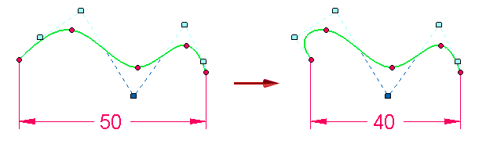
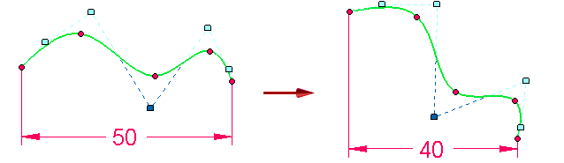
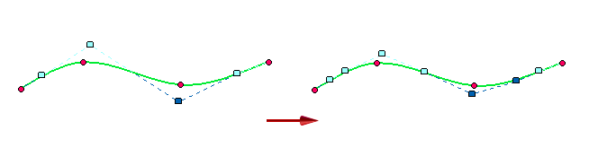
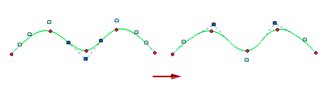

Curve Options dialog box
- Relationship Mode
-
Specifies the relationship mode that controls how relationships, such as connects, tangency, and dimensions, affect the shape of the curve. You can set the relationship mode to flexible or rigid.
-
Flexible mode allows you to use external relationships to control the shape of the curve. For example, you can apply a dimension relationship on the curve and as you make changes to the dimensions, the shape of the curve automatically updates.

-
Rigid mode does not allow external relationships to control the shape of the curve. Instead, the curve shape remains unchanged and the curve simply rotates.

-
- Degree
-
Specifies the number of degrees for the curve. You can specify a number between 2 and 10.
-
If you increase the number of degrees the control polygon for the curve changes, but the shape of the curve remains the same.

-
If you decrease the number of degrees, the control polygon for the curve changes and the curve changes size based on the supplied edit points.

-
How do I
Draw a curveDisplay the control polygon for a curve
Insert or remove points on a curve
Simplify a curve
Convert analytic geometry to a b-spline curve
Draw a conic curve
Edit a conic curve
Look up more details
Curve commandCurve command bar
Conic command
Conic command bar
Simplify Curve command
Simplify Curve dialog box
Convert To Curve command